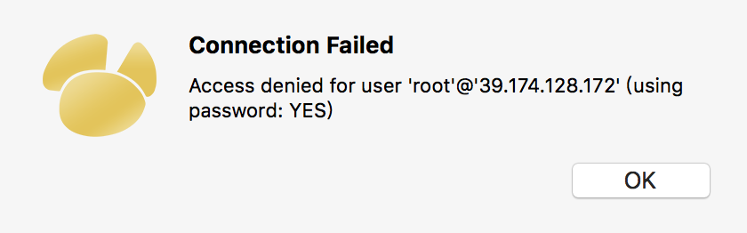

centos7服务器 配置Tomcat和mysql
前言：
- 搜索有关配置服务器的信息时
- 一定要指明服务器系统的类别（Window,Centos,Ubuntu），
- 还要指明系统的版本号（Centos6,Centos7），不同的版本的系统之间的差别也很大。
- 最好搜索最近一年的，太久远的博文可能就滞后了。
还要稍早写的一篇 👉👉👉 centos7配置apache，添加域名
centos7 安装、配置mysql数据库
1 | yum install mysql |
安装mysql和mysql-devel都成功，但是安装mysql-server失败
CentOS 7 版本将MySQL数据库软件从默认的程序列表中移除，用mariadb代替了
MariaDB数据库管理系统是MySQL的一个分支，主要由开源社区在维护，采用GPL授权许可。开发这个分支的原因之一是：甲骨文公司收购了MySQL后，有将MySQL闭源的潜在风险，因此社区采用分支的方式来避开这个风险。MariaDB的目的是完全兼容MySQL，包括API和命令行，使之能轻松成为MySQL的代替品。
1 | yum install mariadb-server mariadb |
mariadb数据库的相关命令是：
1 | systemctl start mariadb // 启动MariaDB |
启动数据库后，就可以正常使用了
1 | mysql -u root -p |
为了方便使用，需要在本地使用 Navicat 连接服务器上的数据库。
- 可能会碰到没有权限的问题，可能需要firewall 防火墙开放3306端口
1 | systemctl start firewalld // 开启防火墙 |
- 还可能碰到这个问题
1 | Host 'xxx.xx.xxx.xxx' is not allowed to connect to this MySQL server |

可能是一种安全预防措施，可以尝试添加新的管理员帐户：admin 123456
1 | mysql> CREATE USER 'admin'@'localhost' IDENTIFIED BY '123456'; |
这样就可以用新的管理员账号连接mysql了。

centos7 安装、配置 Tomcat
安装JDK
安装Tomcat之前需要确保已经安装了 JDK
输入 java -version 来判断是否已经安装了java
如果没有安装，则本地先下载JDK，再上传到服务器的 /usr/local/ 目录
1 | // 执行 rpm包安装 |
检查java版本
1 | java -version |
安装Tomcat
下载 apache-tomcat-8.0.46，解压之后，再上传到
/usr/local/目录创建用户组，并添加用户到用户组
1 | groupadd tomcat |
- 修改权限
1 | chown -R tomcat:root apache-tomcat-8.5.9 |
- 启动Tomcat
1 | /usr/local/apache-tomcat-8.0.46/bin/startup.sh |
当然每次启动Tomcat都要进入这个文件夹，很麻烦，我们可以将Tomcat配置为系统服务，直接通过
systemctl start/stop/restart tomcat操作Tomcat。
详细请参考👉👉👉 Centos7下添加Tomcat为系统服务
- 配置 Tomcat端口号
在 /usr/local/apache-tomcat-8.0.46/conf/server.xml
1 | <!-- 配置Tomcat的端口号的，默认是8080，因为服务器的默认端口是80，这里我们就改成80 --> |
我前一篇写 centos7配置apache，添加域名 里面的Apache也是80端口，两个现在一起无法一起启动，因为端口冲突了，所有先把Apache先关闭。
就算配置Tomcat是8080端口，两个一起启动，Apache的配置文件里 也不能加监听8080端口的代码 Listen 8080 。
- 配置 Tomcat绑定多个域名
编辑 server.xml，在 <Service></Service> 标签中添加：
1 | <Host name="zzz.tangliangdong.me" appBase="webapps" unpackWARs="true" autoDeploy="true"> |
只需要改两个地方：
- name —— 绑定的域名
- docBase —— 域名映射的绝对路径
这样我们就可以通过 域名来访问服务器对应的路径了
当然这个域名需要经过 域名解析的，不然配置了也没用。
参考
本文部分摘录自以下博客，特别写出来，以表感谢。